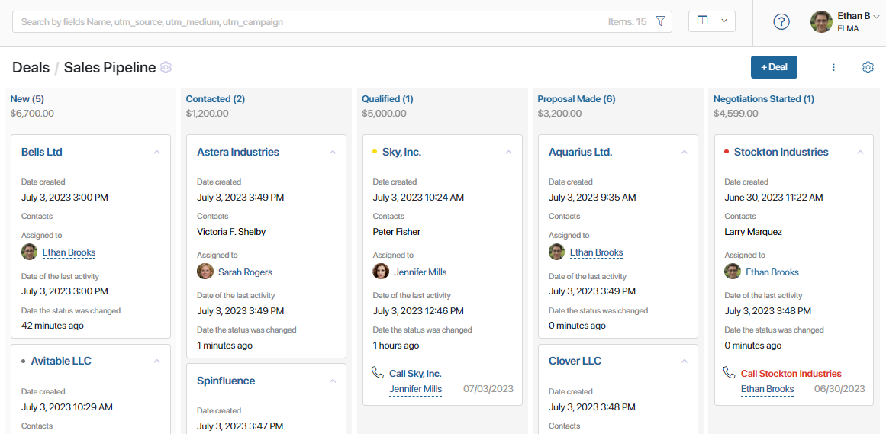
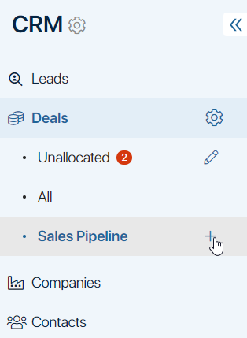
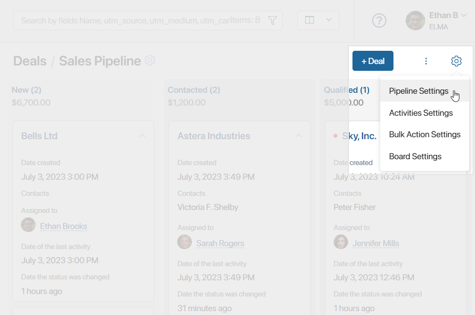
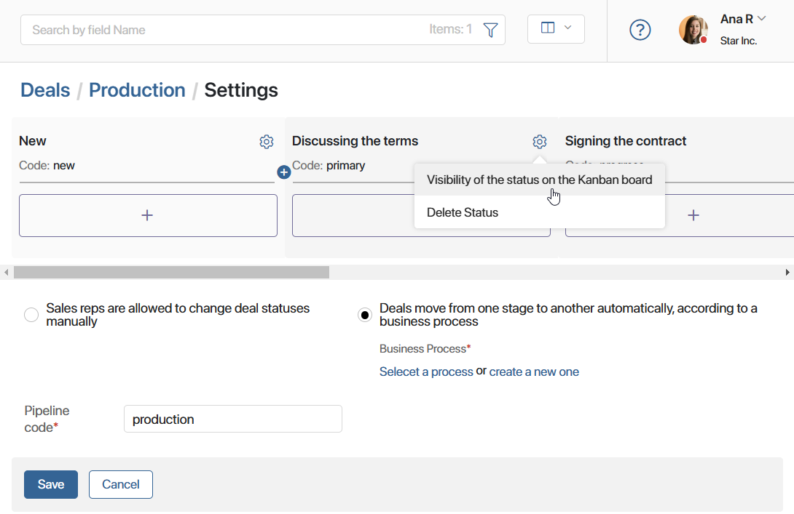
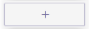
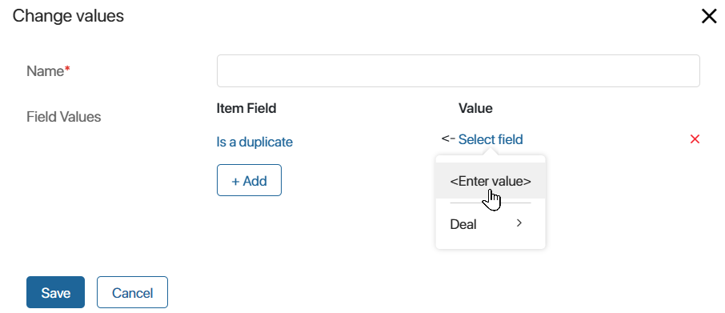
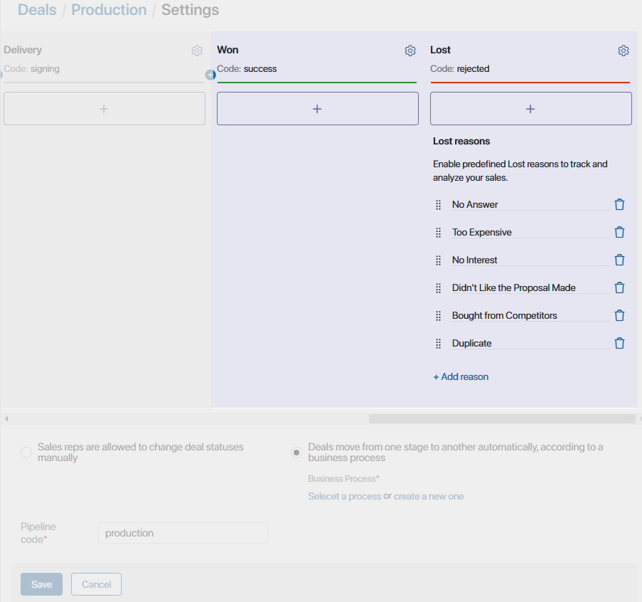
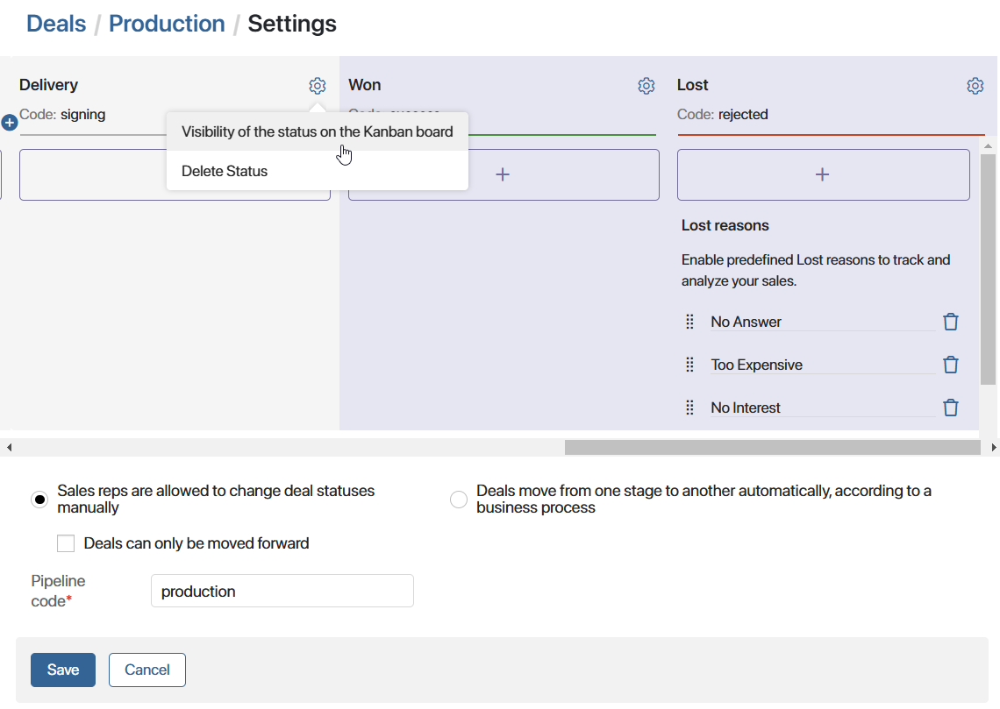
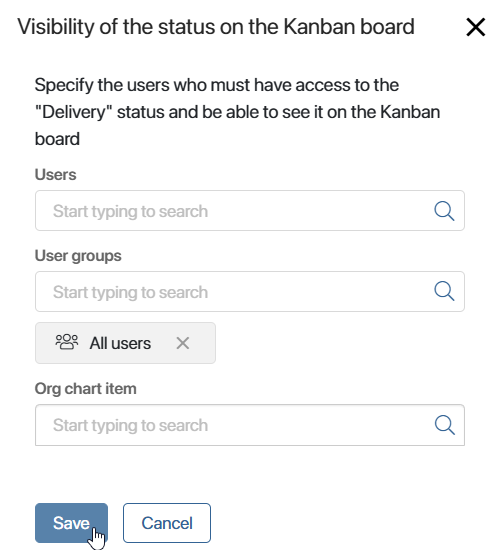
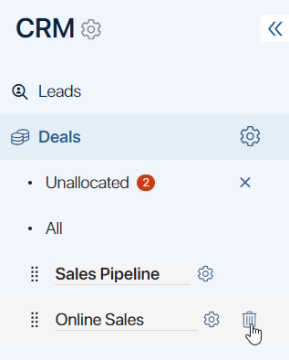

A pipeline is a tool for tracking the flow of deals from the initial contact until they are closed. You can always be aware of the number of deals at each stage, know who is responsible for them, and see tasks associated with them.

The columns correspond with the deal status at each stage of the sales process. When a deal status changes, it moves from one stage to another. Read more about it in Manage status. Close a deal.
The default pipeline describes a simple, common sales process. Though the standard stages might work for most companies, you can freely edit their names, delete them, and add new ones. This allows you to make custom pipelines that accurately represent your company’s business model.
начало внимание
Only the users included in the Administrators group can configure, add, and delete pipelines.
конец внимание
Add a new pipeline
You can set up multiple pipelines in the Deals app. To do this, click on the + icon to the right of the last pipeline and specify a name. You can then configure its stages.

If you’ve set up multiple pipelines, you can also change their order. To do this, click on the pencil icon opposite the Unallocated page name and drag pipelines.
Set up stages
To edit deal processing stages:
- Go to a pipeline’s page. Make sure the Kanban board view is selected.
- In the upper right corner, click on the gear icon and select Pipeline Settings.

- Sales reps are allowed to change deal statuses. This option allows employees to manually move deals from one stage to another.
- Deals can only be moved forward. Prevent users from moving deals back to previous stages.
- Deals move from one stage to another automatically, according to the business process logic. A deal will automatically move from one stage of the pipeline to another within a business process. You can select an existing process or add a new one. Please note that this option will only work correctly if you add the Manage Status activities and select the current pipeline statuses in it.
- Configure the pipeline stages. You can do the following:

- Edit the name of the stages by clicking on them.
- Rearrange the stages using drag-and-drop.
- Delete a stage by clicking the recycle bin icon.
- Add the new stage by clicking the
 icon.
icon. - Configure actions that will be performed when a deal status changes.
- Specify users who will see the stage on the pipeline page. Configure this with the Visibility of the status on the Kanban board option.
- Exclude a stage by clicking the gear icon next to its name and selecting Delete Status. The first and final stages cannot be deleted.
Configure actions in a pipeline
To specify actions that will be automatically performed when a deal moves to the next stage, click on the  button under a column name.
The following actions are available:
- Start a business process. This option allows you to select a business process that will start when a deal moves to this stage. For example, the contract approval process can start automatically when a deal moves from the In Progress stage to Negotiations.
- Email. This option allows you to automatically notify customers that their order is completed or forward a contract approved within a business process.
This action is configured in the same way as the Email Notification activity. Read more about its configuration in the Email Notification article.
This action is configured in the same way as the Email Notification activity. Read more about its configuration in the Email Notification article. If an error occurs while sending the notification, for example, if the recipient’s email address cannot be determined, the employee who changed the deal status will receive the corresponding notification.
- Webhook. This option allows you to automatically transfer data from BRIX to an external system. This action is configured in the same way as the Webhook activity. Read more in the Webhook article.
If the external system returns an error in response to the request, the employee who changed the deal status will receive the corresponding notification.
- SMS. This activity is used to notify customers and employees via SMS about any events. For example, you can configure an automatic notification about passing an order to the shipping company.
This action is configured in the same way as the Send Message activity. It is necessary to integrate with the provider of SMS newsletter service beforehand. Read more about this in the Send Message article.
If an error occurs while sending the message, for example, if the external provider cannot be accessed, the employee who changed the deal status will receive the corresponding notification.
- Change values. This option allows you to automatically change the value of any field on the deal page when it moves to a different stage in the pipeline. For example, a deal has the Is a duplicate property. It can have two values: Yes and No. By using the Change values action, you can automatically set the desired value for the attribute when the deal moves to another stage, for example, from the signing stage to implementation.
To configure this action, in the left column, select the field whose value you want to change. In the right column, specify the new value.

You can add several actions to one stage. In that case, the system will perform them in the order they were added.
Final pipeline stages
If you scroll the horizontal slider to the right, you will see the final statuses of the pipeline: Won and Lost. For the Lost stage, you can configure possible reasons for rejection. To create a new reason, click +Add reason. To delete a reason, click the recycle bin icon next to its name.

By default, deals with final statuses are hidden from the pipeline page. You can configure the visibility of the stage and show deals with this status.
Configure the visibility of stages on the Kanban board
You can configure different display of the Kanban board on the pipeline page for different users. For example, the manager sees all deal stages on the board, and the accounting department team only sees the Approval stage. By hiding statuses, employees see only the columns they are working with.
At the same time, app items with hidden statuses will be displayed for all users if you select the table view.
By default, the Lost status is hidden. The remaining stages are displayed for all users.
To set the visibility of a deal stage:
- Click the gear icon to the right of the status name and select the Visibility of the status on the Kanban board option.
 - In the window that opens, specify who should see the deal status on the Kanban board. You can select:
- User.
- User group.
- Org chart item.

Configure the visibility of a pipeline and its items
You can limit the visibility of each pipeline in the left menu, as well as configure access to its items.
For example, if your company has several sales teams, create groups and assign users to them. Then configure the settings so that the group sees only the pipeline it is working with.
Access to items is restricted in the Deals app settings.
To configure the visibility of a pipeline, click the pencil icon next to the name of the Unallocated page. Then click on the gear icon that appears next to the desired pipeline and specify the user groups and roles that can see it.
Read more about pipeline visibility in the Access settings for CRM apps article.
Delete a pipeline
The All and Unallocated page, as well as the pipeline added by default, cannot be removed from the list. However, you can remove custom pipelines. To do so:
- In the Deals app, open the pipeline you would like to delete. If in contains app items, move them to another pipeline before deleting the current one.
- Click on the pencil icon next to the Unallocated page name.
- Next to the name of the pipeline you are deleting, click on the recycle bin icon and confirm the deletion.
